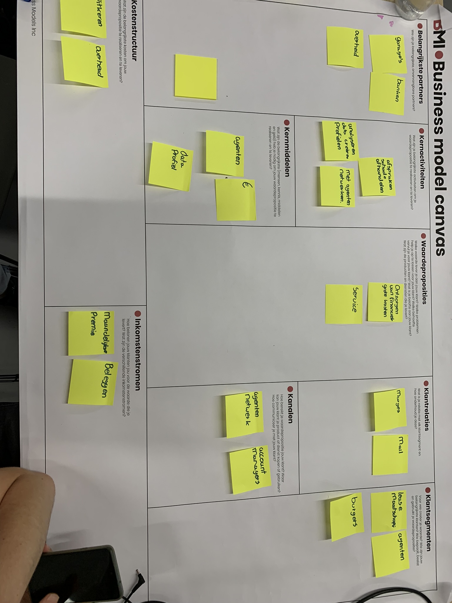

SMART BUSINESS
Welkom in het huis van mijn Smart bussiness ontwikkeling. Op de verdiepingen beneden is zowel de BMC, Lean en Scrum te vinden.
Wil je terug naar de hoofdpagina druk dan op het home bordje aan de linker kant
1-9-2022 Klantwaarde
In deze sessie ging het over wat je kwam halen bij de minor en wat in het verlengde ligt van smart me. Voor deze les heb ik een filmpje gemaakt over de value proposition and persona profile die ik heb ingevuld met Mathijs. Daarnaast hebben wij geleerd over klantwaarde en hoe je die kan realiseren. Voor mij was klantwaarde al een bekend onderwerp.

14-9-2022
Bussiness model Canvas AXA
1 / 3

BMC eerste versie AXA
2 / 3
Plan implementatie
3 / 3
BMC 2e versie
Op de 14e van de september was er een gastcollege over de Smart Business Case, tijdens deze workshop zat ik in een groepje met een medestudent van de opleiding Logistics Management en een student van Facility Management. Hierdoor waren de antwoorden die er tot stand waren gekomen meer bedrijfskundig gericht.
Uiteindelijk kwam uit het ingevulde BMC antwoorden tot stand die overeen kwamen met die van de gastleraar zelf. De oplossing zelf was meer technisch gericht. Dit ging over het uitlezen autogegevens. Tijdens het overleg is tot stand gekomen dat de pitch gericht moest worden op de klant ervaring, deze optie kwam dan ook voornamelijk vanuit de student Facility. Maar desondanks waren wij het allemaal erover eens dat deze optie de beste is.
Uit de feedback van de gastleraar kan ik het volgende meenemen voor een volgende pitch. De leraar gaf aan dat het fijn was om tijdens de pitch de totstandkoming toe te passen. Hiervoor hadden wij niet gekozen omdat de totstandkoming al behandeld was de afgelopen uren.
Voor de volgende pitch is het handiger om een visueel presentatie te maken en niet alleen het model te laten zien. Dit was dan ook feedback vanuit de leraar.
Uiteindelijk kwam uit het ingevulde BMC antwoorden tot stand die overeen kwamen met die van de gastleraar zelf. De oplossing zelf was meer technisch gericht. Dit ging over het uitlezen autogegevens. Tijdens het overleg is tot stand gekomen dat de pitch gericht moest worden op de klant ervaring, deze optie kwam dan ook voornamelijk vanuit de student Facility. Maar desondanks waren wij het allemaal erover eens dat deze optie de beste is.
Uit de feedback van de gastleraar kan ik het volgende meenemen voor een volgende pitch. De leraar gaf aan dat het fijn was om tijdens de pitch de totstandkoming toe te passen. Hiervoor hadden wij niet gekozen omdat de totstandkoming al behandeld was de afgelopen uren.
Voor de volgende pitch is het handiger om een visueel presentatie te maken en niet alleen het model te laten zien. Dit was dan ook feedback vanuit de leraar.
7-10-2022 Bezoek ELK & LEAN
Op 28 september 2022 op bezoek gegaan bij de ELK. Tijdens de presentatie en rondleiding is er informatie gegeven over ELK en hun motto Geen Gedoe. Tijdens deze rondleiding hebben wij ook rondleiding gekregen over LEAN. Voor mij was LEAN al bekend maar was alsnog interessant om te zien hoe het succesvol kan worden geïmplementeerd in een gehele bedrijf.
Na deze rondleiding hadden wij nog een presentatie over Agile en scrum werken.
De presentatie hierover was al erg bekend bij mij, maar het zelf werken tijdens deze presentatie vond ik wel interessant. Er moest een spel worden gespeld waarbij er volgens scrum werd gewerkt, zo was het belangrijk dat je niet de meeste punten haalden maar belangrijk dat je verwachting overkomt met wat je realiseert. Dit was voor mij wel een leermoment die goed bij is gebleven, niet meteen denken dat je het hoogste kan halen maar stabiel beginnen en als dat dan staat pas hoger gaan inzetten.
Na de workshop hebben wij nog een verbeterpunt mogen bedenken voor ELK en deze mogen presenteren aan de manager. Deze is hiernaast te zien.
Wij hadden bedacht om een 360 model te maken die klanten zelf kunnen inzien, om de klanten kennis te laten maken met een ELK kubus en hoe deze eruit ziet. Daarnaast zal het mogelijk kunnen zijn om de opties die er mogelijk zijn te laten zien. Daarnaast zouden ze deze ELK Kubus kunnen toepassen in een AR applicatie om deze in de huidige situatie in te laten zien.
Na deze rondleiding hadden wij nog een presentatie over Agile en scrum werken.
De presentatie hierover was al erg bekend bij mij, maar het zelf werken tijdens deze presentatie vond ik wel interessant. Er moest een spel worden gespeld waarbij er volgens scrum werd gewerkt, zo was het belangrijk dat je niet de meeste punten haalden maar belangrijk dat je verwachting overkomt met wat je realiseert. Dit was voor mij wel een leermoment die goed bij is gebleven, niet meteen denken dat je het hoogste kan halen maar stabiel beginnen en als dat dan staat pas hoger gaan inzetten.
Na de workshop hebben wij nog een verbeterpunt mogen bedenken voor ELK en deze mogen presenteren aan de manager. Deze is hiernaast te zien.
Wij hadden bedacht om een 360 model te maken die klanten zelf kunnen inzien, om de klanten kennis te laten maken met een ELK kubus en hoe deze eruit ziet. Daarnaast zal het mogelijk kunnen zijn om de opties die er mogelijk zijn te laten zien. Daarnaast zouden ze deze ELK Kubus kunnen toepassen in een AR applicatie om deze in de huidige situatie in te laten zien.


28-9-2022
BMC en Complex Adaptive system
In deze sessie is er verder gegaan op BMC. Het business model canvas is tijdens de vorige sessie al behandeld en uitgelegd. Tussen de eerste sessie en deze sessie is er een BMC voor het eigen project gemaakt.Nadat deze waren behandeld is de Complex Adaptive System behandeld. Dat gaat over verschillende onafhankelijke agenten met eigen inzicht, lerend vermogen en gedrag. Deze reageert samenhangend en gedraagt zich samenhangend maar wordt complete chaos als het fout gaat of verstoord wordt. Innovatie wordt ook gezien als een verstoring in dit systeem, want de wijziging die innovatie veroorzaakt moet aanslaan en helen. Bij innovatie geldt dat je moet weten welke gebieden je gaat aanpakken en indirect beïnvloedt. En hiervoor biedt de BMC niet genoeg. Hiervoor was er door Paul Kalis het TOP-model ontwikkeld. Hiernaast is een ingevulde TOP-model voor het project van Defensie, persoonlijk vindt ik dit TOM-model beter passen bij defensie dan het BMC.
Gastlessen Yvonne.
Yvonne heeft ons 2 lessen gegeven waarbij de eerste een management game en de tweede was meer organisatorisch gericht met betrekking tot de eigen eigenschappen.Eerste les was de management game, deze vond ik er interresant omdat het interactieve les was. Tijdens deze les heb ik geleerd dat er goede communicatie moet zijn om de belangen van jezelf maar ook die van de ander duidelijk te krijgen. Er kan niet worden verwacht dat iemand zijn of haar eigen belangen aan de kant legt zonder een duidelijke onderbouwing om die van jou over te nemen. Deze moet dan de effecten op zowel lange als korte termijn laten zien, omdat iemand anders geen idee heeft wat er te wachten staat. Wanneer je erachter komt dat het niet lukt om jouw belangen door te krijgen heb ik geleerd dat je vooral ook niet het slachtofferrol moet aannemen.
De tweede les ging over jezelf en de organisatie. Als voorbereiding moesten wij de caluwe test maken, hieruit kwam dat ik een blauwe persoonlijkheid heb. Dit is een meer rationeel en projectmatige persoonlijkheid. Wat mij aanstond was het motto dat er vaak bij hoort: eerst denken dan doen. Dit merk ik heel erg in mijn persoonlijk leven, dat ik al een plan maak voordat ik ook maar de eerste stap zet.
Mijn organisatie was Defensie, deze heeft dan ook na mijn mening een gele persoonlijkheid. Aangezien dit een organisatie is die draait om veiligheid en macht waar iedereen werkt aan de orders van iemand die boven je staat.
Tijdens de les hebben we onder anderen ook gekeken naar stakelholders en welke stappen er moeten worden gekozen om tot succes te komen. Zo moet er goed gekeken woren naar welke interventies er geraadpleegd kunnen worden bij weerstand. Bijstaand model hebben we ingevuld om te laten zien welke aspecten er positief of negatief moeten worden beïnvloed om de veranderbereid te verhogen.
Competenties & Wat heb ik geleerd
Competentie: Ambitieuze leerdoelen & Leren buiten mijn vakgebied.Omdat ik al een bedrijfskundige opleiding volg was een gedeelte van wat er behandeld was herhaling. Ondanks dat heb ik toch behoorlijk wat nieuwe aspecten opgedaan. Zo had ik nog nooit gehoord van het BMC of addaptive systems. Hierdoor heb ik zeker meer geleerd tijdens dit vak dan dat ik eerst had verwacht, aangezien er werd aangegeven dat dit herhaling kon zijn. Hierdoor heb ik alsnog meer kennis op kunnen doen om te gebruiken tijdens het project of voor later op mijn werk.
Ik zou zelf nooit op de opleiding de BMC of TOM model hebben gebruikt maar ik ga die zeker in het vervolg gebruiken om goed de huidige situatie en vervolg situatie in kaart te brengen.
Competentie: Het helpen van groeien van anderen.
Tijdens het samenwerk momenten heb ik voornamelijk met mensen gezeten die ook bedrijfskundig waren, hierdoor hebben wij meer kunnen sparren over verschillende uitwerkingen of mogelijkheden dan dat ik heb geholpen met leren door middel van het uitleggen van theorien. Dit vind ik wel jammer maar kan ik achteraf helaas niks meer aan doen. Desondanks denk ik dat we door de spar sessies wel iets geleerd hebben omdat iedereen zijn of haar eigen interpetatie had.
Competentie: Bewust bezig met mijn eigen groei.
Tijdens de gastlessen van Yvonne heb ik vooral geleerd hoe om te gaan met werknemers, werkgevers of anderen belanghebbende. Hierbij dan vooral goed in de gaten te houden naar de eigenschappen van de persoon, jezelf en organisatie is maar ook de situatie en hierop inspelen. Dit is iets wat ik in mijn persoonlijk leven en werkleven goed van pas kan komen. Ik heb hierdoor een nieuw doel voormijzelf opgesteld om meer te kijken naar de persoon en deze in te schatten wat voor persoonlijkheid die heeft. Hierdoor hoop ik de andere beter te begrijpen.
Dankzij de LEAN les heb ik nog geleerd hoe je beter lagere maar realistische verwachtingen kan aan houden dan een te hoge verwachting. Hierdoor kan je later altijd nog opschalen in plaats van afschalen als het niet lukt. Hierdoor voorkom je teleurstelling.

Competentie: Iniatief en betrokkenheid
Tijdens de lessen en opdrachten heb ik actief meegedaan om tot een oplossing te komen. Ik heb ideën voorgesteld en geprobeerd door te vragen bij andere mensen om te disscusieren over de beste mogelijke oplossing. Dit heb ik wel zo eerlijk en op professioneel niveau gedaan.
Competentie: Feedback en zelf reflectie om te leren
Tijdens de eerste les hebben wij 2 keer moeten presenteren, de tweede keer hebben wij een simpele dia in elkaar gezet zonder dat er veel op stond. Toen uiteindelijk de winnede presentatie werd benoemd was een van de doorslagevende punten de visuals bij de presentaties. Hieruit heb ik toen gehaald om te zorgen voor dat bij elke presentatie hoe klein dan ook altijd verschillende visuals te gebruiken, waaronder ook het logo van het bedrijf. Uit deze feedback is dan ook meteen meegenomen bij de presentatie van ELK. Hierbij hebben wij meteen zowel een voorbeeld visual laten zien als het logo van ELK.